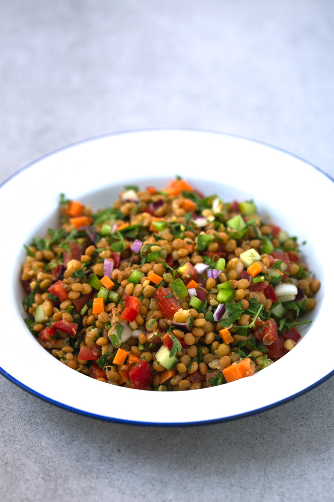

Ensalada de lentejas

Imagen tomada de Danza de fogones
La ensalada de lentejas es un clásico en nuestra cocina. En cuanto aprieta el calor guardamos la olla rápida y consumimos todo tipo de ensaladas.
Las lentejas fueron nuestro primer acercamiento a las legumbres frías y sigue siendo, probablemente, la más recurrente en nuestro menú, pero es susceptible de prepararse con cualquier otra legumbre.
La textura y sabor de la alubia roja la hace también especialmente indicada para ser mezclada con verdura cruda o hierbas aromáticas.
- 400 g de lentejas cocidas o de bote
- 2 tomates
- 2 latas de atún
- 2 zanahoras
- 1 pimiento verde (opcional)
- 1 limón
- Sal y aceite de olivda
- Enjuaga las lentejas cocidas de bote (no es necesario, pero suelen añadir un gusto pastoso).
- Corta y añade las zanahoras y el pimiento.
- Corta el tomate a tu gusto, añádelo y sálalos.
- Añade el atún. Remueve los ingredientes y vuelve a salar, ahora sí, toda la ensalada.
- Aliña con el aceite y el limón.